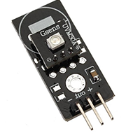
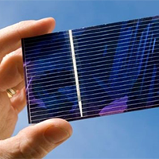
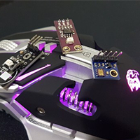

Como é composto:
Funciona da seguinte forma, ao entrar em contato com raios UV, é emitido um sinal analógico referente à quantidade de luz ultravioleta detectada.
Esse módulo pode ser muito útil na criação de dispositivos que avisam o usuário sobre queimaduras solares ou detectam o índice de UV no que se refere às condições climáticas.
Este sensor detecta a luz 280-390nm com mais eficiência. Essa detecção inclui parte do espectro UVB (raios ardentes) e a maior parte do espectro UVA (raios bronzeadores).

Sensores arduino:
Medidor de índice UV com Arduino
O nosso medidor utilizar uma placa Arduino Uno e um Sensor de Raio Ultravioleta UV Guva-S12SD como esse da imagem abaixo.
Ele é um sensor relativamente compacto, conta com furos para fixação e tem somente 1 pino de conexão com o microcontrolador:

Intensidade:
O sensor emite uma tensão analógica linearmente relacionada à intensidade UV medida (mW / cm2). Para correto funcionamento,
basta conectar a saída do módulo a um canal ADC do microcontrolador como Arduino,
para ler a intensidade da luz UV. O sensor UVM-30A é capaz de detectar raios UV com tamanho de onda entre 200 e 370mm, com uma rápida resposta. A saída de dados é analógica e utiliza um único pino,
cujo valor pode ser lido pela maioria dos microcontroladores. O módulo aceita tensão de alimentação entre 3 e 5V.